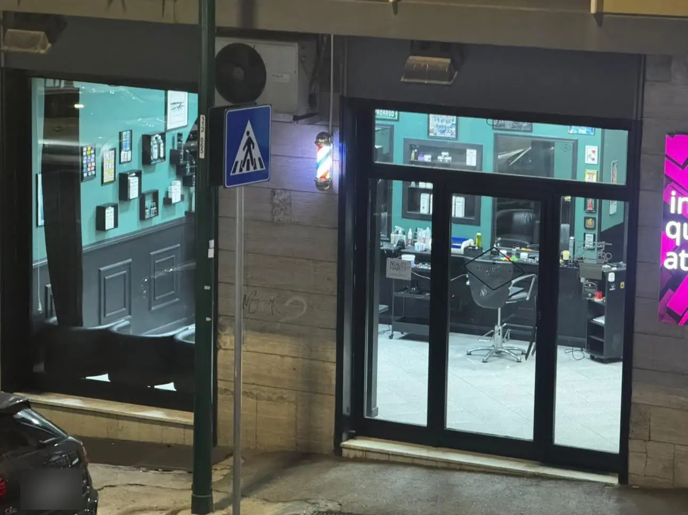
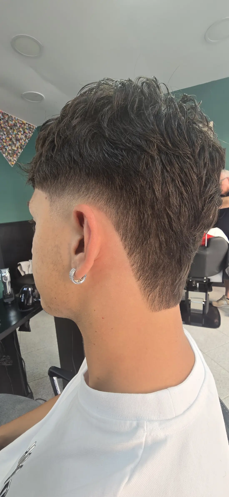

Esperienza davvero da 5 stelle. Sono stata in questa barberia e ne sono uscito pienamente soddisfatto. Il locale è pulito, curato nei dettagli e ha un’atmosfera accogliente che ti mette subito a tuo agio. Il risultato finale è stato impeccabile, preciso e rifinito alla perfezione. Si vede chiaramente la passione per il proprio lavoro. Servizio puntuale, senza attese inutili, e grande attenzione anche all’igiene e al comfort del cliente. Ottimo anche il rapporto qualità-prezzo. Consigliatissima, tornerò sicuramente!

Barbiere · Soccavo
081BarberiaTroncone
Barbiere a Soccavo, in Via Servio Tullio, 63.
Via Servio Tullio, 63, 80126 Napoli, NA
Barbiere
A Soccavo, Napoli.
5,0 stelle su Google
83 recensioni dei clienti.
Scrivici su WhatsApp
Oppure chiama il 349 104 4563.
Soccavo
Barbiere a Soccavo
In Via Servio Tullio, 63, a Soccavo, 081BarberiaTroncone è il punto di riferimento di tanti clienti: barbiere con 5,0 stelle su Google.
Su Google ci date 5,0 stelle su 83 recensioni. Per informazioni scriveteci su WhatsApp o chiamateci.
5,0voto su Google
83recensioni Google
63Via Servio Tullio

Recensioni
Cosa dicono di noi
Recensioni pubblicate su Google, riportate come sono scritte. Leggile tutte →
5,0
83 recensioni su Google
Sono una nonna e ho portato mio nipote in questa barberia per un taglio… devo dire che è stata un’esperienza davvero da 5 stelle! Appena entrati siamo stati accolti con grande gentilezza e pazienza, cosa non scontata quando si tratta di bambini. Il barbiere è stato bravissimo: ha saputo mettere subito a suo agio il piccolo, parlando con lui e facendolo sentire tranquillo. Il taglio è venuto benissimo, preciso e adatto alla sua età. L’ambiente è pulito, ordinato e molto accogliente. Si percepisce attenzione e cura in ogni dettaglio. Ci torneremo sicuramente!
Una vera istituzione nel cuore di Soccavo. La Barberia 081 Barberia Troncone rappresenta il perfetto equilibrio tra tradizione e professionalità. Salvatore, con la sua esperienza storica, e suo figlio Giovanni ‘Johnny’, sempre aggiornato sulle ultime tendenze, accolgono ogni cliente con cordialità, precisione e grande passione per il proprio lavoro. Ambiente pulito, curato e familiare, dove ci si sente subito a casa. Tagli sempre impeccabili, attenzione ai dettagli e qualità che ormai è diventata una garanzia nel quartiere. Non è solo una barberia, ma un punto di riferimento per chi cerca stile, professionalità e un rapporto umano autentico. Consigliatissima a chiunque voglia affidarsi a mani esperte e vivere un’esperienza di vero barbiere napoletano. Firmato : Giovanni Vivenzio Dacia & Renault
Barberia top nel cuore della passeggiata di soccavo. Prezzi ottimi, qualita’ e gentilezza della proprieta’ fanno essere anche una semplice barba un’esperienza super piacevole. Consigliatissimo!
Dal 2003, il mio unico barbiere di fiducia. Più di 20 anni di capelli tagliati, senza mai cambiare fede. Professionalità, prodotti di livello e cordialità sono i punti fermi della 081barberiatroncone. Straconsiglio.
Vieni a trovarci
Orari e dove siamo
Orari di apertura
| Lunedì | Chiuso |
| Martedì | 09:00–20:00 |
| Mercoledì | 09:00–20:00 |
| Giovedì | 09:00–20:00 |
| Venerdì | 09:00–20:00 |
| Sabato | 09:00–20:00 |
| Domenica | Chiuso |
Orari
Orari della scheda Google: nei festivi possono cambiare, chiamateci per conferma.
Soccavo, Napoli
Prenota il tuo appuntamento
Scrivici su WhatsApp o telefona al 349 104 4563: ti rispondiamo noi.